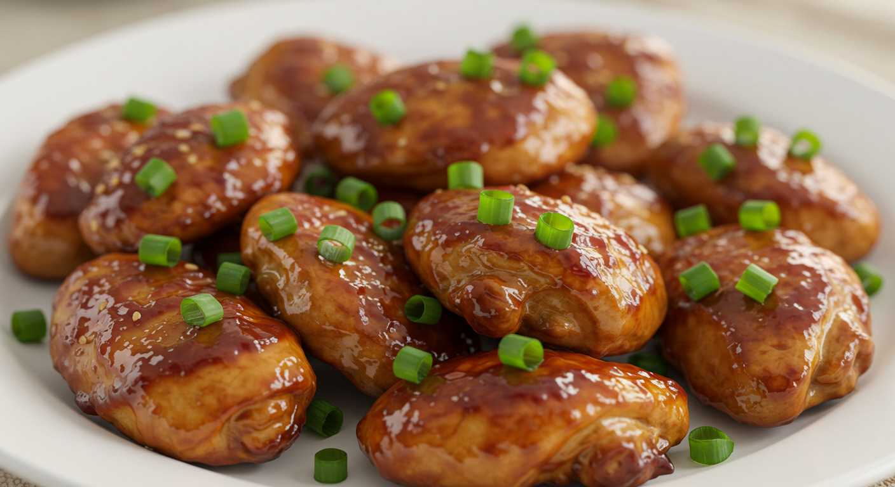

Baked Teriyaki Chicken

Baked teriyaki chicken is a delicious and easy-to-make dish that combines tender, oven-baked chicken with a sweet and savory teriyaki glaze. The sauce, typically made from soy sauce, brown sugar, garlic, ginger, and a splash of vinegar or honey, caramelizes beautifully as it bakes, coating the chicken in rich flavor. Bone-in or boneless chicken thighs are often used for their juiciness, but chicken breasts work well too.
This dish is perfect for weeknight dinners or meal prep, as it requires minimal effort and delivers big taste. It pairs wonderfully with steamed rice and vegetables like broccoli or snap peas, making for a balanced and satisfying meal. Baked teriyaki chicken brings the flavors of your favorite takeout right to your kitchen with a healthier, homemade touch.
Ingredients
- ½ cup white sugar
- ½ cup soy sauce
- ¼ cup cider vinegar
- 1 tablespoon cornstarch
- 1 tablespoon cold water
- 1 clove garlic, minced
- ½ teaspoon ground ginger
- ¼ teaspoon ground black pepper
- 12 boneless, skinless chicken thighs
Steps
- Preheat the oven to 425 degrees F (220 degrees C). Lightly grease a 9x13-inch baking dish.
- Combine sugar, soy sauce, cider vinegar, cornstarch, cold water, garlic, ginger, and pepper in a small saucepan over low heat. Simmer, stirring frequently, until teriyaki sauce thickens and bubbles, 3 to 5 minutes. Remove from the heat.
- Place chicken thighs in the prepared baking dish. Brush both sides of each thigh with the sauce. Reserve any extra sauce for basting.
- Bake in the preheated oven for 30 minutes.
- Flip chicken and brush with sauce. Continue to bake, basting with remaining sauce every 10 minutes, until no longer pink and juices run clear, 20 to 30 more minutes.
- Serve hot and enjoy!